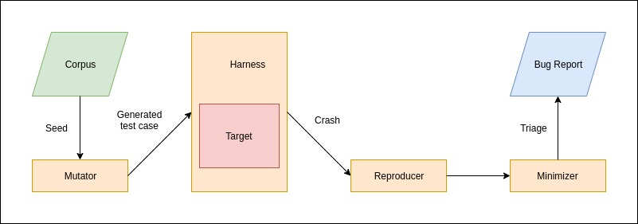

5 minutes
Architecture
A robust pipeline needs to be established to ensure that a fuzzer is effective and efficient. The pipeline is required to perform the following tasks:
- Generate new test cases.
- Ensure delivery of the test cases to, and safe execution, of the target.
- Record the statistics from the execution of the test cases.
- Reproduce the crashes.
- Triage the crashes.
 Generic fuzzing pipeline.
Separate modules perform different set of the aforementioned tasks. The underlying code in these modules is aligned with the principles of code resusability and modularity. This way, different modules can be swapped as per requirement of the program being fuzzed.
Mutator
A value is taken as the seed. It could be a single value, or it could be a bunch of values, known as a corpus. This seed(s) could be completely random, could be meticulously crafted or could be somewhere in the middle; it depends on the information we have about the program being fuzzed. This seed value is then sent to the mutator, which applies a pre-decided set of operations to “mutate” (transform) the seed and generate a new input(test case).
The mutation operations are dictated by the programmer of the module, and are generally focused on:
- extreme cases, such as
- minimum and maximum allowed integers.
- strings of length zero, or longer than the allowed buffer.
- specific values that can trigger crashes, such as
- null value
- unicode characters
- semi-colons
Usually, a factor is set by the programmer to decide the amount of mutation to produce in the new input.
Harness
A target function is a function that takes an input and works on it. A harness is a function that acts like a wrapper over the specified target function to ensure that the mutated input reaches the target function. The wrapper acts as an interface between the mutated inputs and the target function. It is also responsible for ensuring that any crashes or bugs encountered in the target function during fuzzing are handled safely, and that they do not interfere with the fuzzing pipeline.
A harness benefits from various statistics that can collected from a single run of fuzz testing, the most prominent being code coverage and crash detection. However, employing such techniques could make the process of building the harness a bit more tricky.
Coverage Guided Fuzzing
An input to a target function will go through a bunch of constraints and processing. At some point, the input is either gonna be accepted or invalidated. The path that particular input took to reach that exact point is the amount of code covered by that input. Therefore, Code Coverage is a measure of the amount of code that has been tested during the fuzzing process, and therefore the aim is to get a high code coverage. It can be measured by basic blocks (general choice), branches or code paths.
Certain code blocks, such as checks on input, might get frequently executed. And there might be some blocks that might never get executed, such as redundant error checks.
Code coverage measurements provide an insight into the fuzzing process about what parts of the binary are getting executed. These insights can be used to improve the mutator’s output - any input that has covered a significant amount of code can be used as the seed to generate new test cases. This would somewhat ensure that the test cases generated thereafter would at least cover that much code.
NOTE: The technique is only effective when the target is deterministic.
Crash Detection
It is critical to be able to detect a crash as soon as it happens in order to make the process efficient, done with the help of timeouts and checking response at regular time periods. Moreover, at the expense of making the process a bit more complicated and resource intensive, we can extract any and all metadata pertaining to the crash too, such as attaching a debugger to the process would allow us to fetch the full trace of the bug.
Reproducer
A crash doesn’t just occur due to bugs; the execution environment could be in a unique position, unfavorable to the target’s execution which might cause the target to crash. Therefore, inputs that triggered a crash must be recorded, along with it’s seed, so that they can be re-run multiple times over to ensure that the crash triggered by them was due to a legitimate bug, and not circumstantial. Thus, a reproducer has the responsibility to re-run the target and test if a crash-triggering input is legitimate or not.
Minimizer
Once a reproducer confirms the effectiveness of a test case, it needs to be reduced. Over time, test cases generated may grow in size and complexity, and may become completely different that the original seed. This would not only lead to a higher execution time, it might also harbor certain mutations that are irrelevant towards triggering the bug altogether. A minimizer narrows down the test case to the bare minimum set of alterations required to trigger the same bug. The target function is executed several times, reducing the alterations made to the test case every time, till it reaches the point where only the smallest of the changes remain that are still capable of causing the crash. This is done in order to simplify the analysis for the cause of the bug; if the exact alteration triggering the crash is known, it’ll be easier to find out the reason for the occurrence of the bug.
Therefore, a minimizer module may not be employed in the pipeline unless it is decided that an observed crash would be triaged.
Triage
Once a bug is confirmed and a bug triage is performed, a bug report is drawn up. It may contain either of a bug patch or a bug exploit, or both. The report would also contain additional information such as the exception type, register values, stack trace and the test case used to trigger it. Moreover, the crash needs to be categorized so that it can be prioritized accordingly. It would also aid in tracking unique bugs. A Microsoft tool, known as !exploitable (bang exploitable), works in conjunction WinDbg to categorize the crashes.
Sanitizers are an effective tool for detection of any violations that might occur. They also aid in the report as all sanitizers provide an extensive log of the crash.
fuzzingmutatorharnessreproducerminimizertriagecoverage-guidedbug-report
1050 Words
2021-01-20 05:30 +0530